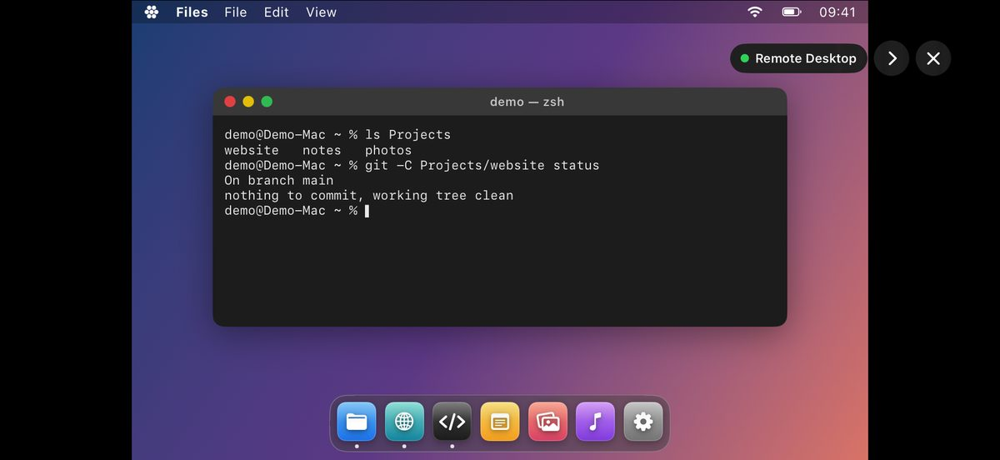
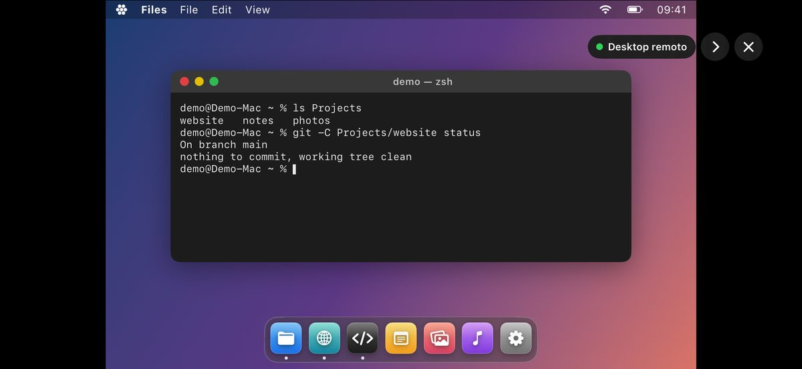
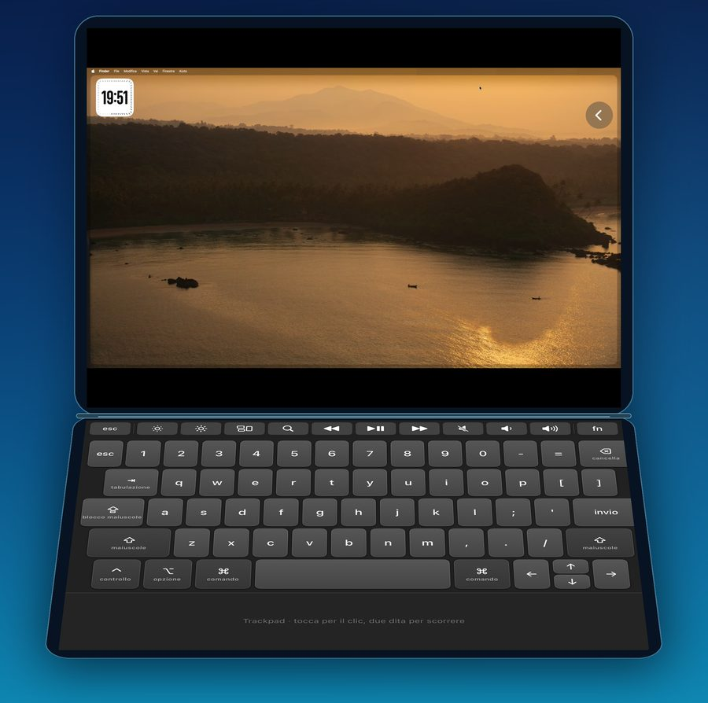
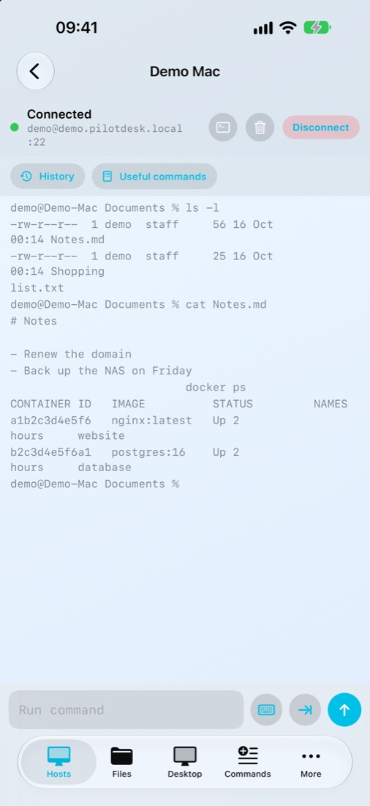
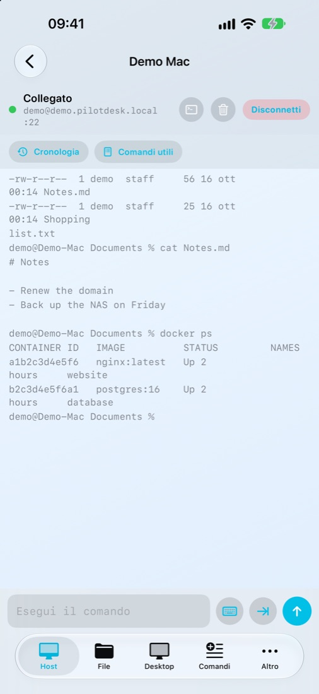
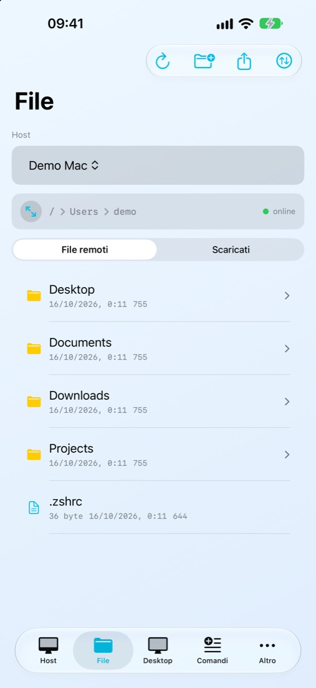
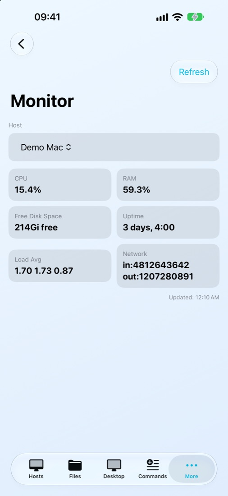
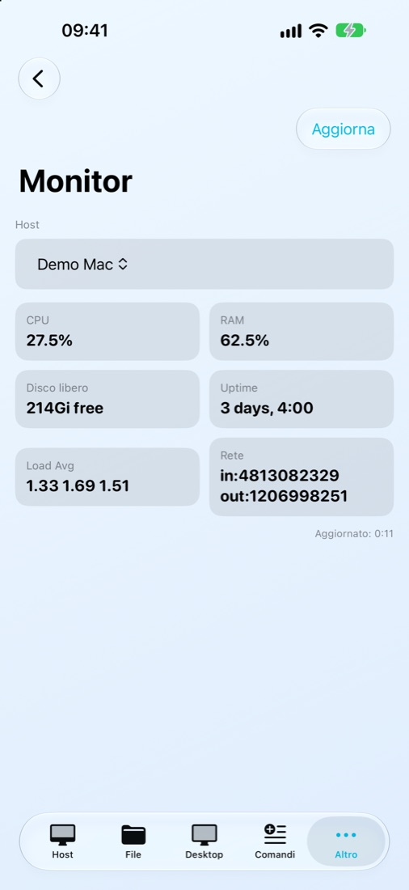
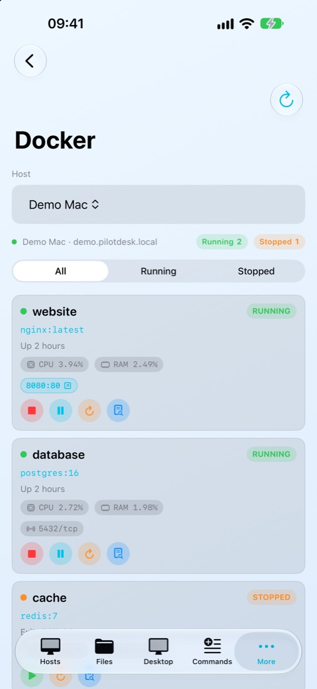
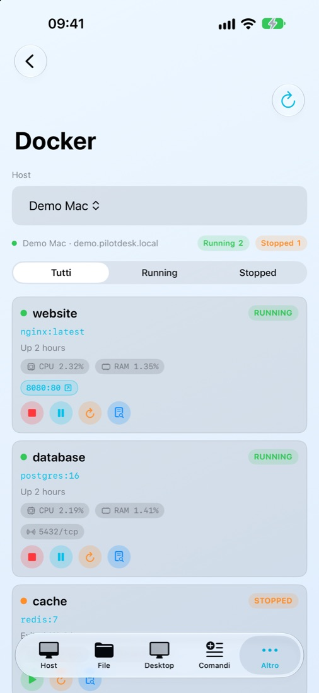

Your Mac, from wherever you are.Il tuo Mac, ovunque tu sia.
See and control your Mac's screen from your iPhone, turn your iPad into a second display, and keep its terminal, files and AI agents in your pocket.
Vedi e comandi lo schermo del Mac dall'iPhone, usi l'iPad come secondo monitor, e hai in tasca il suo terminale, i file e gli agenti IA.
Not just the terminal: the whole screen.Non solo il terminale: tutto lo schermo.
Install the free PilotDesk Host on the Mac and the phone becomes a window onto it: you see the desktop live, click with a tap, scroll with two fingers and type on a real Mac keyboard.
Installi sul Mac PilotDesk Host, gratis, e il telefono diventa una finestra sul Mac: vedi il desktop dal vivo, clicchi con un tocco, scorri con due dita e scrivi su una vera tastiera da Mac.


Remote desktopDesktop remoto
Your Mac's screen on iPhone or iPad, at home over Wi-Fi or away through your VPN.
Lo schermo del Mac su iPhone o iPad, a casa via Wi-Fi o fuori attraverso la tua VPN.
A second displayUn secondo monitor
The Mac extends onto your iPad or iPhone like any other monitor, over Wi-Fi or a USB cable.
Il Mac si allarga sull'iPad o sull'iPhone come su un monitor qualsiasi, via Wi-Fi o con il cavo USB.
iPhone Duo, a small laptopiPhone Duo, un piccolo portatile
Open it halfway: the Mac on top, keyboard and trackpad below the fold.
Aprilo a metà: il Mac sopra, tastiera e trackpad sotto la piega.


Download PilotDesk Host for the MacScarica PilotDesk Host per il Mac
Free, for macOS 14 or later, signed and notarized by Apple. No account and no server in between: the picture goes straight from your Mac to your device.
Gratis, per macOS 14 o successivo, firmata e notarizzata da Apple. Nessun account e nessun server in mezzo: l'immagine va dritta dal Mac al tuo dispositivo.
Everything you open a laptop for, on the phone in your hand.Quello per cui apriresti il portatile, sul telefono che hai in mano.
A real terminalUn vero terminale
SSH into one Mac or several, with a password or a key. Esc, Tab, Ctrl and the arrows sit above the keyboard, and the commands you use often are one tap away.
Entri in SSH su uno o più Mac, con password o chiave. Esc, Tab, Ctrl e frecce stanno sopra la tastiera, e i comandi che usi spesso sono a un tocco.


Your files, where they areI tuoi file, dove sono
Browse folders, preview photos and documents, edit a text file and save it back, or copy something from one Mac to another.
Sfogli le cartelle, guardi foto e documenti, modifichi un file di testo e lo salvi sul Mac, o copi qualcosa da un Mac all'altro.

How the Mac is doingCome sta il Mac
Processor, memory, free disk and uptime, without opening Activity Monitor.
Processore, memoria, disco libero e da quanto è acceso, senza aprire Monitoraggio Attività.


Docker, without a laptopDocker, senza portatile
See which containers are running, start and stop them, read their logs.
Vedi quali container sono attivi, li avvii e li fermi, leggi i loro log.


Your AI agents, while you're outI tuoi agenti IA, mentre sei fuori
Start Claude Code, Codex, Gemini CLI, Aider or Ollama on the Mac with one tap. They keep working when you close the app, you follow them in the Dynamic Island and pick up where you left off.
Avvii Claude Code, Codex, Gemini CLI, Aider o Ollama sul Mac con un tocco. Continuano a lavorare quando chiudi l'app, li segui nella Dynamic Island e riprendi da dove eri rimasto.
Pair by pointing the cameraAbbini inquadrando
The first time a device connects over Wi-Fi, PilotDesk Host shows a QR code. Scan it from the phone and you are paired; typing the code still works.
La prima volta che un dispositivo si collega via Wi-Fi, PilotDesk Host mostra un codice QR. Lo inquadri dal telefono e sei abbinato; scrivere il codice funziona ancora.
The screen, away from home tooLo schermo, anche fuori casa
On mobile data or someone else's Wi-Fi, PilotDesk reaches your Mac through Tailscale or another VPN you already use. No server in between and no account with us: the picture goes straight from your Mac to your phone. How to set it up
Con i dati mobili o il Wi-Fi di qualcun altro, PilotDesk raggiunge il tuo Mac attraverso Tailscale o un'altra VPN che usi già. Nessun server in mezzo e nessun account da noi: l'immagine va dritta dal tuo Mac al tuo telefono. Come configurarlo
Linux tooAnche Linux
Terminal, files, Monitor and Docker work with any Linux computer or server that has SSH, with nothing to install. For its screen there is PilotDesk Host for Linux, for Debian, Ubuntu and their derivatives, on Wayland (GNOME, KDE) and X11. How to set it up
Terminale, file, Monitor e Docker funzionano con qualsiasi computer o server Linux che abbia SSH, senza installare niente. Per il suo schermo c'è PilotDesk Host per Linux, per Debian, Ubuntu e derivate, su Wayland (GNOME, KDE) e X11. Come configurarlo
Download PilotDesk Host for Linux (.deb)Scarica PilotDesk Host per Linux (.deb)
Free. Remote desktop only: the extended display needs a Mac.
Gratis. Solo desktop remoto: lo schermo esteso richiede un Mac.
Set up in two minutesPronta in due minuti
- Turn on Remote LoginAttiva Login remoto On the Mac: System Settings, General, Sharing. Sul Mac: Impostazioni di Sistema, Generali, Condivisione.
-
Add your MacAggiungi il tuo Mac
In PilotDesk, enter its address (like
MyMac.local), your user name and password. In PilotDesk scrivi il suo indirizzo (tipoMioMac.local), il nome utente e la password. - Want the screen too?Vuoi anche lo schermo? Install PilotDesk Host on the Mac and leave it open. It finds your iPhone or iPad by itself. Installa PilotDesk Host sul Mac e lasciala aperta. Trova da sola il tuo iPhone o iPad.
Free to start, pay once for moreGratis per iniziare, paghi una volta per il resto
| Terminal, files and one MacTerminale, file e un Mac | FreeGratis |
| Remote desktopDesktop remoto | 5,99 € |
| Extended displaySchermo esteso | 3,99 € |
| Tools: commands, Monitor, Docker, editor, galleryStrumenti: comandi, Monitor, Docker, editor, galleria | 1,99 € |
| More MacsPiù Mac | 1,99 € |
| Mac-style keyboards and Touch BarTastiere in stile Mac e Touch Bar | 0,99 € |
| PilotDesk Pro: all of it, and what comes nextPilotDesk Pro: tutto, e quello che arriverà | 9,99 € |
One-time purchases, no subscription, where many remote desktop apps charge every month or year. Try everything free for 24 hours inside the app. Prices are for Italy and vary by country.
Acquisti una tantum, nessun abbonamento, mentre molte app di desktop remoto si pagano ogni mese o ogni anno. Nell'app provi tutto gratis per 24 ore. Prezzi per l'Italia, cambiano da paese a paese.